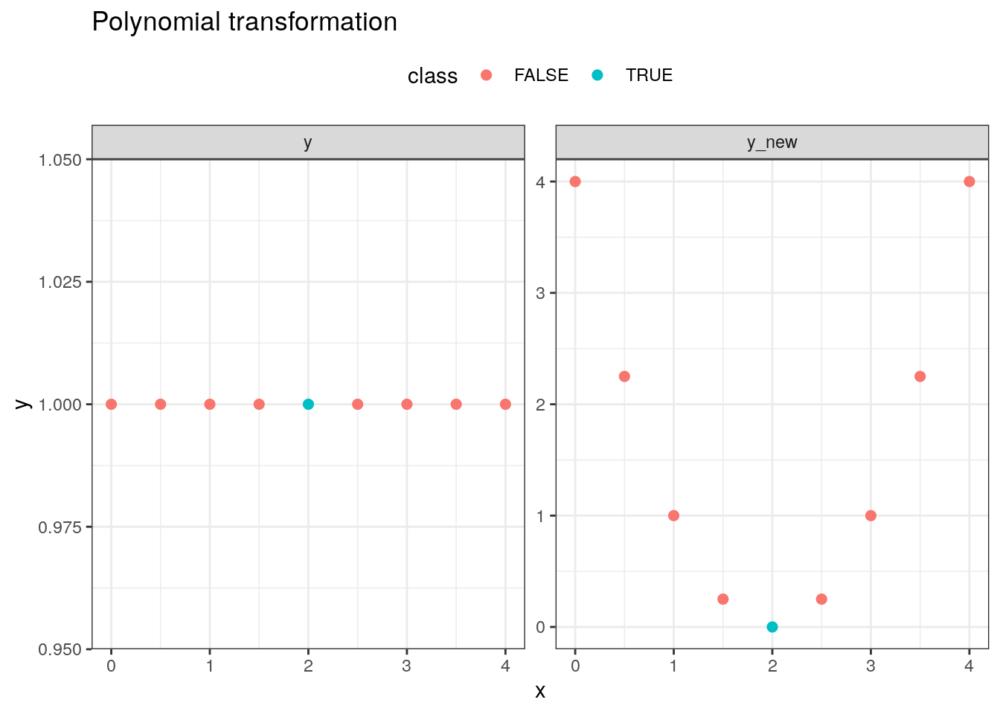
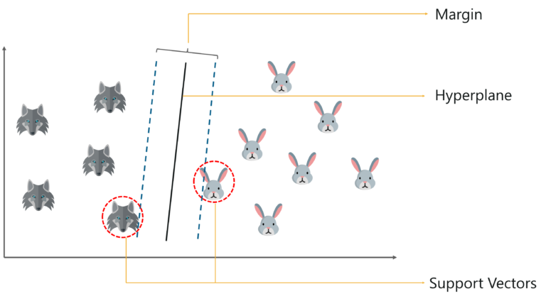
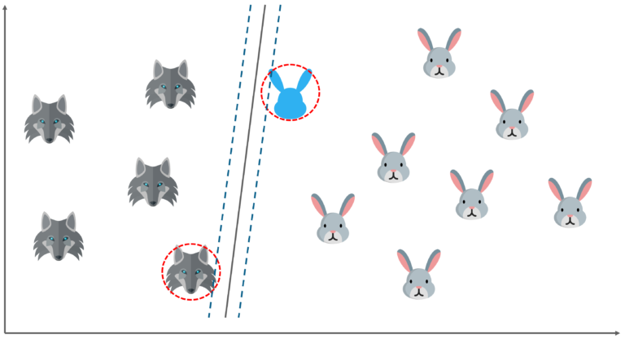
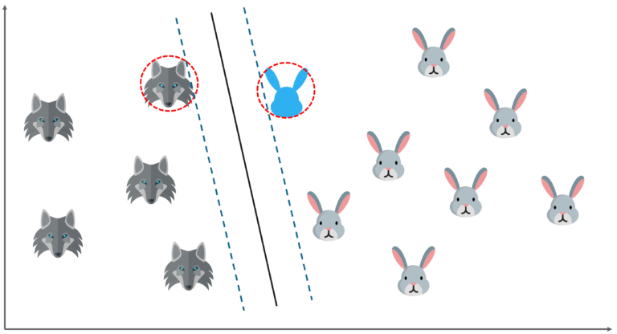
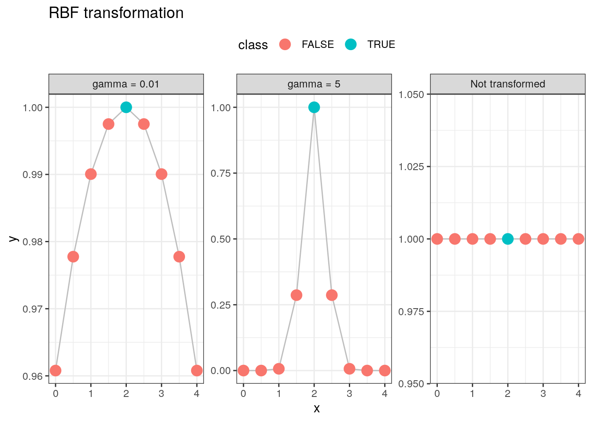

25 Support Vector Machine
25.1 Giới thiệu
Support Vector Machine (SVM) là một thuật toán thuộc nhóm học máy có định hướng (supervised learning). Thuật toán này được sử dụng từ cuối những năm 1990s, đầu 2000 trong việc dự báo.
SVM xây dựng một mặt phẳng giúp phân cách giữa giữa hai nhóm. Mặt phằng được sử dụng phân loại hai nhóm được gọi là hyperplane, các điểm gần nhất với mặt phẳng được gọi là support vector. Khoảng cách giữa hyperplane và các support vector được gọi là margin. Mặt phẳng tối ưu (optimum hyperplance) là mặt phẳng có khoảng cách đến các điểm support vector (margin) là lớn nhất.

Lưu ý: Với cùng 1 tập dữ liệu, có thể có 1 hoặc nhiều mặt phẳng (hyperplane) giúp phân loại các quan sát với kết quả tốt như nhau. Tuy nhiên, hyperplane tốt nhất là hyperplane có margin lớn hơn. Xem ví dụ dưới đây.
Ví dụ 1: SVM chưa tối ưu - margin chưa đạt khoảng cách tối đa 
Ví dụ 2: SVM tối ưu - margin đạt khoảng cách tối đa

25.2 Non-linear SVM
Trong hai ví dụ trên, việc phân loại có thể giải quyết đơn giản bằng việc xây dựng hyperplane tuyến tính. Tuy nhiên, trong thực tế, không phải lúc nào cũng có thể xây dựng một mặt phẳng đơn giản để phân loại dữ liệu. Thay vào đó, ta phải thực hiện phép biến đổi dữ liệu để thay đổi dữ liệu gốc thành kiểu dữ liệu có thể xây dựng hyperplane đơn giản hơn. Phép biến đổi dữ liệu được gọi là kernel
Ví dụ 3: SVM trong mô hình phi tuyến

25.3 Tìm hiểu kỹ hơn về Maximal Margin Classifier
Trong không gian p chiều, hyperlane là một không gian con có p-1 chiều. VD: Trong không gian 2 chiều, hyperlane là 1 đường thẳng. Trong không gian ba chiều, hyperlane là 1 mặt phẳng
Trong không gian 2 chiều, hyperlane được định nghĩa như sau:
\[\beta_0 + \beta_1X_1 + \beta_2X_2 = 0\]
Trong không gian p chiều, hyperlane được định nghĩa như sau:
\[\beta_0 + \beta_1X_1 +...+ \beta_pX_p = 0\]
Mỗi mặt phẳng phân loại như vậy được gọi là “separating hyperplanes”.
Giả sử biến cần phân loại y có giá trị {-1,1}, ta có:
\(\sum_{j=1}^p\beta_iX_{ij} > 0\) nếu \(y_i = 1\) và \(\sum_{j=1}^p\beta_iX_{ij} < 0\) nếu \(y_i = -1\)
Để phân loại các quan sát, có thể tồn tại rất nhiều hyperplane. Do đó, người ta chọn 1 hyperplane có vị trí nằm “xa” nhất giữa 2 miền cần phân loại. Khoảng cách gần nhất giữa 2 miền cần phân loại gọi là margin. Mặt phẳng vuông góc với đường margin này gọi là maximal margin classifier
Khi dữ liệu không chỉ còn đơn giản là margin classifier mà phải sử dụng phép biến đổi dữ liệu với kernel, mô hình được gọi là support vector machine. Trong thực tế, khi xây dựng support vector machine, ta không thể tìm được mặt phẳng phân loại hoàn hảo mà sẽ phải chấp nhận sai số nhất định, mặt phẳng có sai số khi phân loại được gọi là soft margin. ## Ưu nhược điểm của SVM
Ưu điểm:
- Mô hình hiệu quả với nhiều biến (không gian nhiều chiều). Do đó, SVM hoạt động đặc biệt hiệu quả khi phân tích
sentiment, phân loại tài liệudocument, phân tíchgene - Lưu trữ liệu quả: Mô hình SVM chỉ cần lưu trữ một tập con của dữ liệu huấn luyện khi dự báo trên tập mới
Nhược điểm:
- Nhạy cảm với phép biến đổi dữ liệu
kernel - Thời gian tính toán phức tạp với khi có số lượng quan sát lớn
- Không có điểm xác suất khi dự báo: Với mỗi kết quả dự báo, chỉ có kết quả phân loại theo nhóm
Lưu ý
Thuật toán svm thực tế hiện giờ ít được sử dụng mà đang được thay thể bởi nhóm thuật toán cây boosting
25.4 Thực hành với R
Các tham số cần tối ưu:
- \(C\): Tham số quy định độ
softcủa mặt phẳng SVM, C càng lớn, các quan sát phân loại sai bị đánh trọng số càng lớn
Các loại kernel thường gặp:
linear: Dữ liệu mới được tạo thành từ tổ hợp tuyến tínhpolynomial: Dữ liệu được biến đổi bằng đa thức bậc cao từ dữ liệu gốc
Radial Basis Function: Phép biến đổi dữ liệu với hàm \(\phi(x, center) = exp(-\gamma ||x-center||^2)\)
df <- data.frame(x = c(0,0.5, 1, 1.5, 2, 2.5, 3,3.5, 4),
y = rep(1,9),
class = c(F, F, F, F, T, F, F, F, F))
center <- df$x %>% mean
gamma_1 <- 0.01
gamma_2 <- 5
df <- df %>%
mutate(y_1 = exp(-gamma_1 * (x-center)^2),
y_2 = exp(-gamma_2 * (x-center)^2))
df %>%
gather("variable", "y", -x, -class) %>%
mutate(variable = case_when(
variable == "y_1" ~ "gamma = 0.01",
variable == "y_2" ~ "gamma = 5",
TRUE ~ "Not transformed"
)) %>%
ggplot(aes(x, y)) +
geom_line(col = "gray") +
geom_point(aes(col = class), size = 4) +
facet_wrap(~variable, scale = "free") +
theme_bw() +
theme(legend.position = "top") +
labs(title = "RBF transformation")
Ví dụ với R:
library(ISLR)
library(e1071)
Default %>% head default student balance income
1 No No 729.5265 44361.625
2 No Yes 817.1804 12106.135
3 No No 1073.5492 31767.139
4 No No 529.2506 35704.494
5 No No 785.6559 38463.496
6 No Yes 919.5885 7491.559index <- sample(1:nrow(Default), nrow(Default) * 0.75)
train <- Default[index, ]
test <- Default[-index, ]
svm_model <- svm(default ~ ., data = train, kernel = "polynomial", cost = 100)
summary(svm_model)
Call:
svm(formula = default ~ ., data = train, kernel = "polynomial", cost = 100)
Parameters:
SVM-Type: C-classification
SVM-Kernel: polynomial
cost: 100
degree: 3
coef.0: 0
Number of Support Vectors: 471
( 250 221 )
Number of Classes: 2
Levels:
No Yespredict(svm_model, test) %>% table(test$default)
. No Yes
No 2409 72
Yes 2 1725.5 Tài liệu tham khảo
- https://www.edureka.co/blog/support-vector-machine-in-r/
- https://www.datacamp.com/community/tutorials/support-vector-machines-r
- https://www.analyticsvidhya.com/blog/2017/09/understaing-support-vector-machine-example-code/
- https://towardsdatascience.com/support-vector-machine-simply-explained-fee28eba5496
- Support Vector Machine - chater 9 - Introduction to Statistical Learning with R